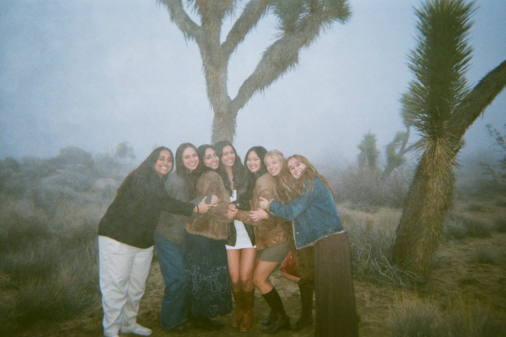
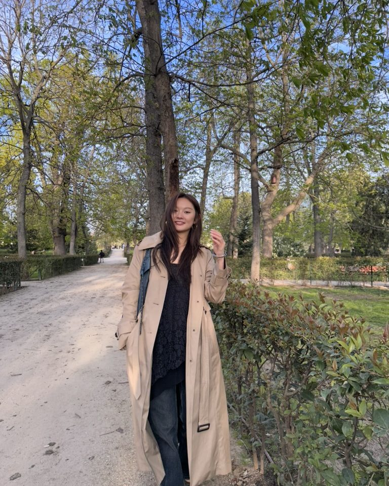

Product & UX researcher
Hi, I'm Grace.
I'm a mixed-methods researcher trained in cognitive psychology and neuroscience. I design experiments, run field studies in messy real-world settings, and build the data infrastructure that turns both into decisions a product team can act on.
Currently product research at Norbert Health, working on a semi-autonomous companion robot deployed in skilled nursing.
New York City · San Francisco
Work
About me
I've always loved trying anything and everything, diving into health, journalism, and data, and this range is what makes me adaptable.
I started in cognitive psychology and neuroscience, studying how people recognize faces, form impressions, and remember them. This grew into behavioral experiments for my undergraduate honors thesis and continued with fMRI analyses for my master's research.
Luckily for me, this training transferred cleanly to product work, because the questions are the same. How do people categorize what's in front of them? What do they notice and remember first? What happens when a system's model of a task doesn't match the mental model of the person doing it? I'm especially curious about how small things, like a voice agent's choise of words or a micro-decision, shape behavior and people's reactions.
I work across the full range, from field interviews and card sorts, to concept testing with lo-fi prototypes, to quantitative analysis, and I build my own Frankenstein research processes when there isn't one that fits.
Underneath all of it is something that hits close to home: making science and information accessible. There's something for everyone, but the real challenge is making that first connection.
What I'm looking for
Product research, UX research, product management, human factors, and HRI roles. Especially where the interface sits between a person and a decision that matters: health, wearables, neurotech, fintech.


Discovering new music and going to live shows (top 3: Cage the Elephant, Rüfüs Du Sol, A$AP Rocky), thrifting, trying new recipes, and getting outdoors in my free time.
- Methods
- Field & contextual research, semi-structured interviews, card sorting, A/B tests, survey design, usability & concept testing, lo-fi prototyping, journey mapping, thematic analysis, participant recruitment, Figma
- Analysis
- Python, SQL, R, behavioral analytics, statistical modeling, topic modeling & sentiment analysis, dashboarding, MS Suite, Google Suite
- Interests
- Human-robot interaction, HCI, clinical human factors, conversational & voice interfaces, cognitive psychology and neuroscience, wearables, fintech
- Education
- M.A. Quantitative Methods in the Social Sciences,
Columbia University (focus: HCI & psychology research)
- B.S. Psychological & Brain Sciences,
UC Santa Barbara, minor in Professional Writing (Technical Writing & Science Communication)